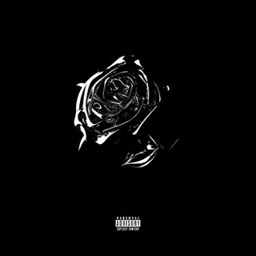
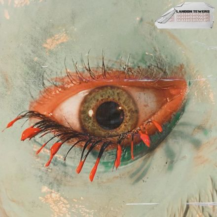
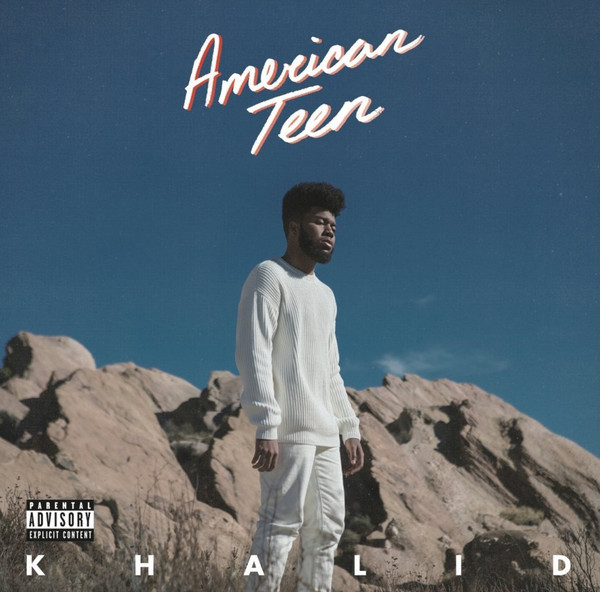
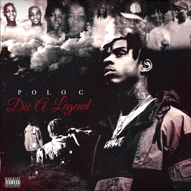
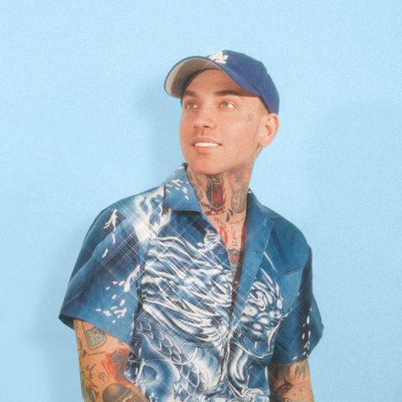
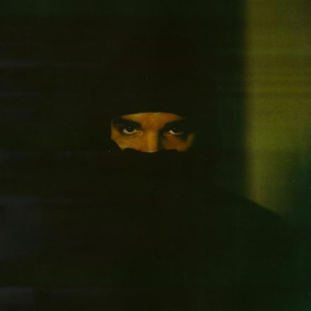
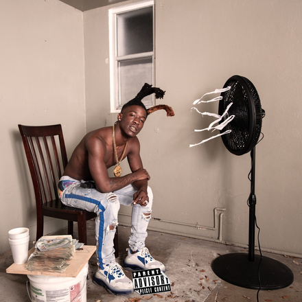
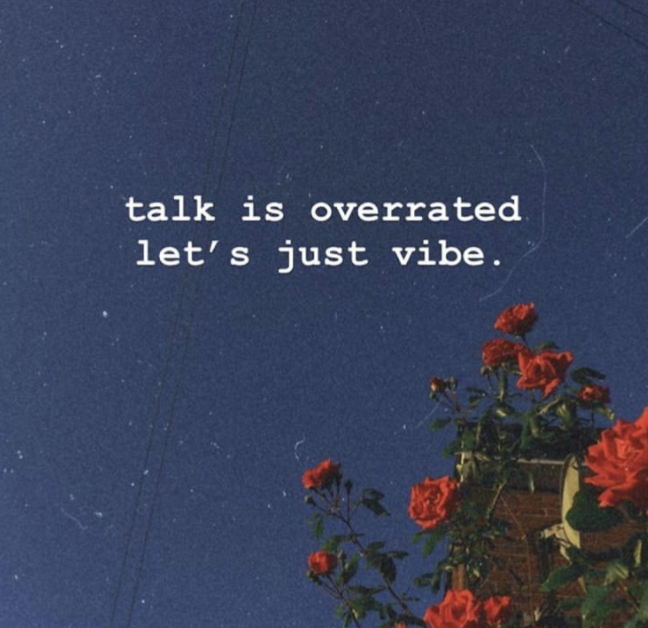
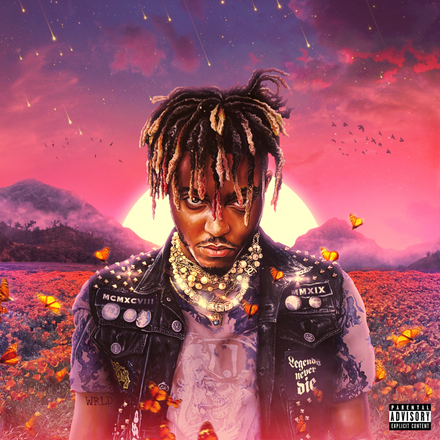
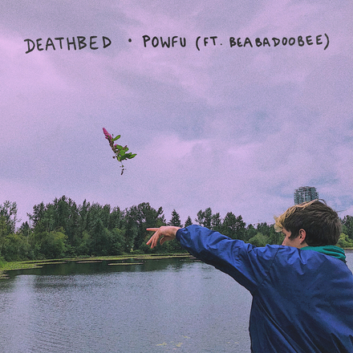

Pop Smoke - Something Special

Lyrics
I think you are (you are) something special
I take you on a shopping spree
'Cause I'm so into you
I'm so into you (I love you, baby)
I'm so into you (oh, my)
I'm so into you, baby (to you, baby)
What you like? What you wear?
Say the name, say the price, put them diamonds on your ear
Shinin' like a chandelier
What's your thoughts? What's your fears?
Yeah, I need that real love
I'm talkin' Bobby and Whitney
You don't gotta worry 'bout nothin' as long as you with me
'Cause shit could get sticky, that's why I keep a glizzy
Ride around through my city
Fuck Kassandra, Kanisha, Kanika and Tisha, Lisa and Tisha, ah (hoes)
Fuck them hoes 'cause I don't need them, all them bitches treeshas
They ain't in the field, they on the bleachers, ah (treeshas)
On your back, I start applying that lotion
So deep, I'ma go in, pullin' all on your sewin'
I'm Pop Smoke, what'd you know of my governments
All that gangster shit, she be lovin' it
She love how I'm thuggin' it
Shawty brown and petite, fly and discreet, a demon in the sheets
Mother was a lawyer, her father the police
They be working long hours, so she always had the free
She said I could come with her if it get hot up in the streets
'Cause I'm a 'rilla in the jungle and shark up in the sea
She like, "Papi, you so fire, but get up out the streets"
I'm like, "Baby what you mean?" (what you mean?)
Look
I think you are (think)
You are (you are) something special (my girl)
I take you on a shopping spree
'Cause I'm so into you
I'm so into you (you are)
I'm so into you
I'm so into you, baby (baby)
Mm, baby (baby)
You are (you are) my girl (my girl)
You are (you are) my girl
I think you are (you are)
You are (you are) something special
I take you on a shopping spree
'Cause I'm so into you (baby)
I'm so into you (you are)
I'm so into you (my girl)
I'm so into you, baby (you are my girl)
Landon Tewers - Im Good

Lyrics
If I don't catch a break
If I'm in seventh place
Trust me I'm good
Yeah I don't need a name
I'll be doing fine in a 2005 car in cheap clothes
Yeah I've had a couple deals
A couple court appeals
Spent some time erasing
No drink here is wasted
I don't give a fuck about what daddy gave you
No ain't got no patience
Yeah I ain't got no time, I'm just living life
I don't wanna move quick
Take my name off the magazine page and put the new kids
I'm singing ooh, ooh, yeah, yeah, I'm good
I'm singing ooh, ooh, yeah, yeah, I'm good
Got friends and family, they don't fail me
Keep your check, bitch I'm prevailing
Ooh, ooh, I'm good
Yeah falling asleep
Awake in a dream
Please leave me here now
Yeah don't even speak
All of my friends who were taken too young are still in this place
Sure, I understand
There's much to repair
I'm dreading this process
Just counting my losses
I won't forget all of the people that pushed me through the worst phase
Yeah I ain't got no time
I'm just living life
I ain't gotta prove shit
I don't wanna move quick
Delete my name from the depths of your brain I'm begging please, please, please, please, please
I'm singing ooh, ooh, yeah, yeah, I'm good
I'm singing ooh, ooh, yeah, yeah, I'm good
Got friends and family, they don't fail me
Keep your check, bitch I'm prevailing
Ooh, ooh, I'm good
Young Dumb & Broke

Lyrics
So you're still thinking of me
Just like I know you should
I can not give you everything, you know I wish I could
I'm so high at the moment
I'm so caught up in this
Yeah, we're just young, dumb and broke
But we still got love to give
While we're young dumb
Young, young dumb and broke
Young dumb
Young, young dumb and broke
Young dumb
Young, young dumb and broke
Young dumb broke high school kids
Yadadadadadadada
Yadadadadadada
Yadadadadadadada
Young dumb broke high school kids
We have so much in common
We argue all the time
You always say I'm wrong
I'm pretty sure I'm right
What's fun about commitment?
When we have our life to live
Yeah, we're just young dumb and broke
But we still got love to give
While we're young dumb
Young, young dumb and broke
Young dumb
Young, young dumb and broke
Young dumb
Young, young dumb and broke
Young dumb broke high school kids
Yadadadadadadada
Yadadadadadada
Yadadadadadadada
Young dumb broke high school kids
Jump then we think, leave it all in the game of love
Love
Run into sin, do it all in the name of fun
Fun
Whoa-oa-oa
I'm so high at the moment
I'm so caught up in this
Yeah, we're just young, dumb and broke
But we still got love to give
While we're young dumb
Young, young dumb and broke
Young dumb
Young, young dumb and broke
Young dumb
Young, young dumb and broke
Young dumb broke high school kids
Yadadadadadadada
Yadadadadadada
Yadadadadadadada
Young dumb broke high school kids
Yadadadadadadada
Yadadadadadada
Yadadadadadadada
Young dumb broke high school kids
Polo G - Chosen 1

Lyrics
You broke that bond, now when it come to you, my feelings weak
You let your selfish ways come in between our chemistry
Why you play with my heart and not show love consistently?
I put my life on the line, you wouldn't take that risk for me
Fucked up my choice, wish I could delete all our memories
Keep poppin' these pills, I hope it take away my misery
I got a dead soul, I been facing blunts of my enemies
Emotions bottled up, I don't know what's wrong and it's killing me
I cut so many off, my heart cold, it's December, B
My mind keep racing, I been overthinking, I don't get no sleep
You don't understand how hard it was, I swear this shit so deep
I made it to the top and they all look up in disbelief
They hate that I'm doin' better, they'd much rather get rid of me
I flex with no regrets 'cause they ain't show me no sympathy
I came a long way but I ain't as far as I'm finna be
I promise I'ma die a legend, I'ma make sure that you remember me
I used to daydream, I pictured everything so vividly
I had a feeling we'd be rich since the elementary
My peoples gone, got to witness everything they ain't get to see
Long live Maxine, I miss your love, wish you was here with me
You was a part of me, and since you left, I'm incomplete
My lifestyle used to be jump shots and sticking D
Life overwhelmed me, I said, "Fuck school", and hit the streets
I devoted my life to that corner just so I can get a G
Fuck a two-four, nigga, I ain't been home and it's been a week
We used to break down eight-balls, wishing we could get a key
Was tryna duck that indictment, the feds did a sweep
I hope you grippin' on your gun when them drillers creep
Lil' nigga grabbed his first glizzy, went on a killing spree
Caught him at that red light snoozin', he thought this shit was sweet
If he come from that other side, we make him rest in peace
I'm way too solid for the gimmicks, fuck the industry
Blackbear - Smile Again

Lyrics
Where is the time going again?
I lost a home, I lost a friend
Love's an ocean, whether you sink or swim
I gave you my best, was it enough?
Maybe the past is holding me up
I keep the memories with me, replay what was
So long, baby
Did you know, you saved me?
Silver line faded
But you know, I'll keep waiting
'Cause when I think of us
I always seem to smile
'Cause I was happy for awhile
I was happy for awhile, yeah
And sometimes love will leave you
Even when it's right
But I was happy for awhile
And I don't know how I'll smile again
Oh-oh, oh-oh, oh-oh-oh-oh
Yeah, yeah
Remember your face, like it was here
I'm getting used to all of the tears
And I'm getting used to forever without you here
And I don't know how I'll smile again
Ask if I am good, I gotta pretend
I'm holding on to three words, I should have said
So long, baby
Did you know, you saved me?
Silver line faded
But you know, I'll keep waiting
'Cause when I think of us
I always seem to smile
'Cause I was happy for awhile
I was happy for awhile, yeah
And sometimes love will leave you
Even when it's right
But, I was happy for awhile
And I don't know how I'll smile again
Oh-oh, oh-oh, oh-oh-oh-oh
'Cause I was happy for awhile
And I don't know how I'll smile again
Drake - Time Flies

Lyrics
[Chorus]
Yeah, I'm outside in an AMG
Right outside, TT
Too turnt, baby girl, you know me, yeah
Still with the dawgs that I grew beside
All the niggas 'round me ride or they die
Gotta watch the time 'cause it's flyin' right by
I'm outside in an AMG, yeah
Right outside, TT
Too turnt, baby girl, you know me
Who am I? All the niggas 'round me ride or they die
Gotta watch the time 'cause it's flyin' right by
Too turnt, baby girl, you know me
[Verse 1]
I just caught a shawty off a finsta
Just threw on a hoodie, it's a Crenshaw
Way that I been livin' unconventional
I'm just tryna make it to the end, ya know
Certain things just started gettin' tenser
Think we need to have us an adventure
I could be your man but maybe down the road
Right now I would rather see my heart turn to chrome
Rather see my heart turn crystal
I can't even front like I don't miss ya
Right now I'm just stuck inside the crib on my own
Soon as I free up, I'm 'bout to pop up on your phone like
[Chorus]
I'm outside in an AMG
Right outside, TT
Too turnt, baby girl, you know me, yeah
Who am I? All the niggas 'round me ride or they die
Gotta watch the time 'cause it's flyin' right by
Too turnt, baby girl, you know me
Yeah
[Verse 2]
Heart's still on javelin, baby
Too turnt, baby girl, you know me
I was pullin' off 'fore they knew me
Sometimes I wish there was two of me or three of me
When it was you and me
I felt like I love you too much to change you
You believe in angles more than angels
Feel like I've been going through too much to explain to you
But I'm still the same way I was when I came to you
Everything I have, what I had to exchange for you
Everything I've been through, I can't even complain to you
Wish it stayed the same for you, sorry
I'm sorry
[Outro]
And-and-and-and—
I'm outside in a—
I'm-I'm-I'm-I'm— (I'm-I'm-I'm-I'm—, I'm-I'm-I'm-I'm—)
I'm outside in a—
I'm-I'm-I'm-I'm— (I'm-I'm-I'm-I'm—, I'm-I'm-I'm-I'm—)
I'm outside in a—
And-and-and-and I'm outside in a—
I'm-I'm-I'm-I'm— (I'm-I'm-I'm-I'm—, I'm-I'm-I'm-I'm—)
I'm outside in a—
Woi-oi, woi-oi-woi-oi-woi-oi-woi-oi-woi-oi
Hotboii - Dont Need Time (Remix) ft. Lil Baby

Lyrics
[Intro]
(K Hendrix cold as a motherfucker)
Ayy, you know what's crazy?
When a bitch die
Like, you ain't gon' never see them again
[Chorus]
Don't need time 'cause time waiting on nobody
Three-five, I'm rollin' to get my lungs right
It seem like the gunfight's the fun life
Ain't no love life, all these bitches wanna fuck right
Don't need time 'cause time waiting on nobody
Three-five, I'm rollin' to get my lungs right
It seem like the gunfight's the fun life
Ain't no love life, all these bitches wanna fuck right
[Verse]
How my Z die? Thought real niggas never die
Gotta sleep tight 'cause people ain't waking up now
I know my nigga made it to heaven, I know it
Wish I could call his phone and tell him how it's going
And this Glock look good with every outfit
I wanna put my nigga on, but he ain't out yet
I got 'em fiending for a song, I just dropped yesterday
When it's dark clouds, you just gotta let it rain
Gotta let it rain
Let a nigga run up on me, I'ma let it rain
Before I love one of these hoes, I'ma love the bank
Ain't loving on no lady
Double-O, lil' baby, gang shit
[Refrain]
Huh, mmm-mmm-mmm
Running with these K's, huh, mmm-mmm-mmm
Running from the jakes, yeah, mmm-mmm-mmm
Just ain't tryna catch a case, yeah, mmm-mmm-mmm
[Interlude]
Man, long live my Z, man
Rest up a motherfuckin' soldier, man
Paper-chasin' Haitian, I'm telling you
This shit real
Double-O, lil' baby
Ain't loving on no lady
None of that, you feel me?
Kut Da Fan On
[Chorus]
Don't need time 'cause time waiting on nobody
Three-five, I'm rollin' to get my lungs right
It seem like the gunfight's the fun life
Ain't no love life, all these bitches wanna fuck right
[Refrain]
Huh, mmm-mmm-mmm
Running with these K's, huh, mmm-mmm-mmm
Running from the jakes, yeah, mmm-mmm-mmm
Just ain't tryna catch a case, yeah, mmm-mmm-mmm
Jeremy Zucker - Talk is Overrated

Lyrics
[Verse 1: Jeremy Zucker]
I don't wanna smoke, I don't need a drink
Just tell me how you feel, tell me what you think
'Cause I've been on my own for a fuckin' while
And I don't need a girl, I just wanna smile
Gettin' my mind right
I'll wait 'til the time's right
I'm meanin' to tell you
Why it's hard to sleep at night
There's nothin' to fear now
Girl, we should be here now
So why don't you hear me out?
I'm saying
[Chorus: Jeremy Zucker]
Talk is overrated, let's just vibe
And love is overrated in my mind
Girl, talk is overrated, let's just vibe
Just for tonight
[Post-Chorus]
I'll be yours if you want me to
I'll be yours if you want me to
[Verse 2: Jeremy Zucker]
I've been hella stressed, I would rather chill
I know you looked at me, wonder how I deal
But look inside my soul, I don't mean to front
'Cause really I don't know what the fuck I want
I remember when we were more than friends
I would just pretend, that was cold
After all this shit, I could not let you in
Summer went, saved up all the money
That I would have spent
On you, girl
[Chorus: Jeremy Zucker]
Talk is overrated, let's just vibe
And love is overrated in my mind
Girl, talk is overrated, let's just vibe
Just for tonight
[Post-Chorus]
I'll be yours if you want me to
I'll be yours if you want me to
[Verse 3: blackbear]
Yeah, let's talk it out
Girl, time out
I know that you only with me for the clout, sit down
You had too much to drink
Maybe it's my fault
I remember you would pull up, pour up Hennessy askin' to smoke
No, no, there you go again
Mixin' blow with downers
Brand new hoes around ya
And when the night is done
You be hittin' my line
Tell me your phone at one percent
3:00 A.M., you wanna vibe
[Chorus: Jeremy Zucker]
Talk is overrated, let's just vibe
And love is overrated in my mind
Girl, talk is overrated, let's just vibe
Just for tonight
Juice WRLD - Wishing Well

Lyrics
I can't breathe (Chopsquad), I can't breathe, 999
Waiting for the exhale
I toss my pain with my wishes in a wishing well
I can't breathe, I'm waiting for the exhale
Toss my pain with my wishes in a wishing well
Still no luck, but oh, well
I still try even though I know I'm gon' fail
Stress on my shoulders like a anvil
Perky got me itching like a anthill
Drugs killing me softly, Lauryn Hill
Sometimes I don't know how to feel
Ring-ring, phone call from depression
You used my past and my memories as a weapon
On the other line, I talk to addiction, huh
Speaking of the devil, all the drugs, I miss them
This can't be real, is it fiction?
Somethin' feels broke, need to fix it
I cry out for help, do they listen?
I'ma be alone until it's finished
This is the part where I tell you I'm fine, but I'm lyin'
I just don't want you to worry
This is the part where I take all my feelings and hide 'em
'Cause I don't want nobody to hurt me
I can't breathe, I'm waiting for the exhale
Toss my pain with my wishes in a wishing well
Still no luck, but oh, well
I still try even though I know I'm gon' fail
It's stress on my shoulders like a anvil
Perky got me itching like a anthill
Drugs killing me softly, Lauryn Hill
Sometimes I don't know how to feel
Sometimes I don't know how to feel
Let's be for real
If it wasn't for the pills, I wouldn't be here
But if I keep taking these pills, I won't be here, yeah
I just told y'all my secret, yeah
It's tearing me to pieces
I really think I need them
I stopped taking the drugs and now the drugs take me
This is the part where I tell you I'm fine, but I'm lyin'
I just don't want you to worry
This is the part where I take all my feelings and hide 'em
'Cause I don't want nobody to hurt me
I can't breathe, I'm waiting for the exhale
Toss my pain with my wishes in a wishing well
Still no luck, but oh, well
I still try even though I know I'm gon' fail
It's stress on my shoulders like a anvil
Perky got me itching like a anthill
Drugs killing me softly, Lauryn Hill
Sometimes I don't know how to fee
PowFu - Death Bed

Lyrics
[Intro: beabadoobee]
Don't stay awake for too long, don't go to bed
I'll make a cup of coffee for your head
It'll get you up and going out of bed
[Verse 1: Powfu]
Yeah, I don't wanna fall asleep, I don't wanna pass away
I been thinking of our future 'cause I'll never see those days
I don't know why this has happened, but I probably deserve it
I tried to do my best, but you know that I'm not perfect
I been praying for forgiveness, you've been praying for my health
When I leave this earth, hopin' you'll find someone else
'Cause yeah, we still young, there's so much we haven't done
Getting married, start a family, watch your husband with his son
I wish it could be me, but I won't make it out this bed
I hope I go to heaven so I see you once again
My life was kinda short, but I got so many blessings
Happy you were mine, it sucks that it's all ending
[Chorus: beabadoobee, Powfu, beabadoobee & Powfu]
Don't stay awake for too long, don't go to bed
I'll make a cup of coffee for your head
It'll get you up and going out of bed (Yeah, ayy)
Don't stay awake for too long, don't go to bed
I'll make a cup of coffee for your head
It'll get you up and going out of bed (Ayy, yeah)
[Verse 2: Powfu]
I'm happy that you here with me, I'm sorry if I tear up
When me and you were younger, you would always make me cheer up
Taking goofy videos and walking through the park
You would jump into my arms every time you heard a bark
Cuddle in your sheets, sing me sound asleep
And sneak out through your kitchen at exactly 1:03
Sundays, went to church, on Mondays, watched a movie
Soon you'll be alone, sorry that you have to lose me
[Chorus: beabadoobee, Powfu, beabadoobee & Powfu]
Don't stay awake for too long, don't go to bed
I'll make a cup of coffee for your head
It'll get you up and going out of bed
Don't stay awake for too long, don't go to bed
I'll make a cup of coffee for your head
It'll get you up and going out of bed
Don't stay awake for too long, don't go to bed
I'll make a cup of coffee for your head
It'll get you up and going out of bed
Don't stay awake for too long, don't go to bed
I'll make a cup of coffee for your head
It'll get you up and going out of bed
[Outro: beabadoobee]
Don't stay awake for too long, don't go to bed
I'll make a cup of coffee for your head
It'll get you up and going out of bed